Before any classifier sees a satellite image, the image is cleaned, resampled, stretched, filtered and enriched with edge and texture layers.
Overview
These steps decide how well the classes separate. This notebook walks through the standalone toolbox geolattice.rsense.image_processing, and for every algorithm gives the mathematics, the function that implements it, and a result on real imagery.
The module follows the OpenCV and scikit-image tutorials but needs only geolattice[rsense] (NumPy, SciPy, scikit-image). Every function takes an xarray.DataArray with dims (band, y, x) (CRS and coordinates are kept) or a NumPy array, and ignores NaN pixels.
Core concepts
Learning objectives
Describe an image as a function \(I(x, y, b)\) on a grid and move between arrays, DataArrays and GeoTIFF files.
Convert color spaces and explain what each channel measures.
Resample and warp an image with the right interpolation and know what happens to the georeferencing.
Stretch, gamma-correct, equalize and match histograms.
Threshold an image with Otsu’s method and clean the mask with morphology.
Smooth, denoise and sharpen with convolution, median, bilateral and total-variation filters, and measure the result with PSNR.
Detect edges (Sobel, Roberts, Prewitt, Scharr, Laplacian, Canny) and corners (Harris), and describe shape with HOG.
Turn processed layers into a feature matrix for a classifier.
Data
All images are in Data/08_remote_sensing/08_09_image_classification/Image_processing:
a window, block-averaged, to show georeferenced geometry
multi_AOI.tif
8-band, 1.6 m multispectral image with no-data gaps
NaN handling, indices, histogram matching
Planet/before/B1-B4.tif
3 m Planet bands (blue, green, red, near infrared)
NDVI, thresholding, morphology
Contents
Setup and data
The image model, I/O and image information
Color spaces
Geometric transformations
Radiometric operations
Thresholding
Filtering and denoising
Edge detection
Morphology
Feature detection and descriptors
A multispectral workflow with no-data
From processed layers to a classifier
Summary, exercises and references
Setup and data
Installation. This notebook needs installation option 5 (core, spatial analysis, spatial statistics, geostatistics and remote sensing): pip install "geolattice[remote-sensing]". See “Installation options” in the GeoLattice README.
Code
import warnings # control warning messageswarnings.filterwarnings("ignore") # hide library warningsfrom pathlib import Path # file pathsimport matplotlib.pyplot as plt # figuresimport numpy as np # arraysimport pandas as pd # tablesimport xarray as xr # labelled arraysfrom geolattice.rsense import image_processing as ip # GeoLattice image-processing functionsDATA = Path("../../../../Data/08_remote_sensing/08_09_image_classification/Image_processing") # folder of the sample images# figure resolution; show pixels without smoothingplt.rcParams.update({"figure.dpi": 100, "image.interpolation": "nearest"})def to_show(img): # turn any image into something imshow can draw# Display array: 3+ bands -> RGB in [0, 1]; 1 band -> 2-D. a = np.asarray(img.values ifhasattr(img, "values") else img, dtype="float64")if a.ndim ==3: # a (band, y, x) array# one band -> 2-D, otherwise the first three bands as RGB a = a[0] if a.shape[0] ==1else np.moveaxis(a[:3], 0, -1)if np.nanmax(a) >1.0or np.nanmin(a) <0.0: # values outside 0-1 lo, hi = np.nanpercentile(a, (1, 99)) # 1st and 99th percentiles a = np.clip((a - lo) / (hi - lo +1e-12), 0, 1) # stretch to 0-1return a # the display arraydef show(images, titles=None, ncols=None, cmap="gray", size=4.2): # show several images side by side images =list(images) # the images as a list n =len(images) # how many ncols = ncols or n # columns (default: all in one row) nrows =int(np.ceil(n / ncols)) # rows needed# the grid of panels fig, axes = plt.subplots(nrows, ncols, figsize=(size * ncols, size * nrows *0.85), squeeze=False)for ax in axes.ravel(): # every panel ax.axis("off") # no axesfor i, im inenumerate(images): # each image a = to_show(im) # its display array# grey scale for one band, colour for RGB axes.ravel()[i].imshow(a, cmap=cmap if a.ndim ==2elseNone, vmin=0, vmax=1)if titles: # titles given axes.ravel()[i].set_title(titles[i], fontsize=10) # the panel title plt.tight_layout() # arrange plt.show() # drawphoto = ip.read_image(DATA /"crop_field.jpg").astype("uint8") # the crop-field photograph as 8-bit RGBprint("photo:", photo.shape, photo.dtype) # its shape and data type
with \(H\) rows, \(W\) columns and \(B\) bands. GeoLattice stores it as an array of shape (band, y, x). For a georeferenced image the pixel \((r, c)\) maps to map coordinates by an affine transform
\[\begin{pmatrix} X\\ Y \end{pmatrix}=\begin{pmatrix} a & b\\ d & e \end{pmatrix}\begin{pmatrix} c+\tfrac12\\ r+\tfrac12 \end{pmatrix}+\begin{pmatrix} x_0\\ y_0 \end{pmatrix},\]
where \(a\) is the pixel width, \(e\) the (negative) pixel height and \((x_0,y_0)\) the upper-left corner. Every function that changes the grid (resize, crop, flip, …) rebuilds the x and y coordinates so this relation still holds.
The module reads and writes through GDAL, so any GDAL format works. read_image(path, bands=None, window=None) reads a 1-based band list and an optional pixel window (row0, row1, col0, col1), so a 550 MB mosaic can be opened without loading it.
read_image, write_image, image_info: file I/O and summary statistics.
to_vector: the \((HW)\times B\) matrix of pixel feature vectors, the bridge to classifiers (section 12).
Code
# Window of the large aerial mosaic, read without loading the whole fileaerial = ip.read_image(DATA /"sw_030.TIF", window=(3000, 7000, 6000, 10000)).astype("uint8")print("aerial window:", aerial.shape, "pixel size (m):", aerial.rio.resolution()) # window size and pixel size# 8-band multispectral image (1.6 m) with no-data gaps -> NaNmulti = ip.read_image(DATA /"DG_MAR.tif", window=(700, 1400, 1100, 1700))print("multispectral:", multi.shape, "CRS:", multi.rio.crs) # window size and CRS# Planet bands (3 m): B1 blue, B2 green, B3 red, B4 near infraredwin = (1500, 2100, 1500, 2100)# the four Planet bands stacked along "band"planet = xr.concat([ip.read_image(DATA /f"Planet/before/B{i}.tif", window=win) for i inrange(1, 5)], dim="band")planet = planet.assign_coords(band=[1, 2, 3, 4]) # band numbers 1 to 4print("Planet:", planet.shape, planet.dtype) # shape and data type# one column per image: bands, size, data type, gaps, georeferencepd.DataFrame({k: ip.image_info(v) for k, v in {"photo": photo, "aerial": aerial, "multi": multi,"planet": planet}.items()}).loc[["bands", "height", "width", "dtype", "nan_count", "georeferenced"]]
show([photo, aerial, multi.isel(band=[4, 2, 1]), planet.isel(band=[2, 1, 0])], # the four images in true colour ["photo", "aerial window", "multispectral (R,G,B)", "Planet (R,G,B)"], size=4.5)
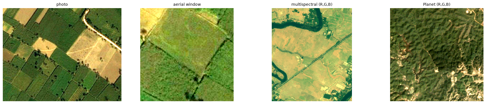
The multispectral image has large no-data areas (NaN, drawn white). All filters and statistics below skip them.
Write and read back a GeoTIFF to check that the CRS and transform survive:
Code
import tempfile # temporary folder for the round tripwith tempfile.TemporaryDirectory() as tmp: # a folder that is deleted afterwards# write the multispectral window as a GeoTIFF path = ip.write_image(multi, Path(tmp) /"multi.tif", dtype="float32", nodata=np.nan) back = ip.read_image(path) # and read it back# compare CRS, bounds and valuesprint("same CRS:", back.rio.crs == multi.rio.crs, "| same bounds:", np.allclose(back.rio.bounds(), multi.rio.bounds()),"| same values:", np.allclose(back.values, multi.values, equal_nan=True))
same CRS: True | same bounds: True | same values: True
Color spaces
Gray (luminance)
A weighted sum of the red, green and blue bands,
\[Y = w_R R + w_G G + w_B B,\qquad (w_R,w_G,w_B)=(0.2125,\,0.7154,\,0.0721),\]
the Rec. 709 luminance weights used by scikit-image (rgb2gray). OpenCV’s COLOR_BGR2GRAY uses \((0.299, 0.587, 0.114)\); pass weights= to switch. The weights sum to 1, so \(Y\) stays in the input range. Gray images are the usual input to edge and texture operators. Function: to_gray.
HSV
With \(R,G,B\in[0,1]\), \(M=\max(R,G,B)\), \(m=\min(R,G,B)\) and chroma \(C=M-m\):
(in \([0,1)\) here). Hue is the color angle, saturation the purity, and value the brightness. Hue and saturation are less sensitive to illumination than raw RGB, which helps separate vegetation (green hue, high saturation) from bare soil (orange hue, low saturation). Functions: rgb_to_hsv, hsv_to_rgb.
CIE L*a*b*
A perceptually uniform space. With linearized RGB converted to CIE XYZ (D65 white point \(X_n,Y_n,Z_n\)) and \(f(t)=t^{1/3}\) for \(t>(6/29)^3\) (linear otherwise):
Euclidean distance in \((L^*,a^*,b^*)\) approximates perceived color difference \(\Delta E\), so k-means in Lab separates colors more evenly than in RGB. Function: rgb_to_lab.
to_uint8 rescales to 0-255 for display or file export.
Code
gray = ip.to_gray(photo) # grey-scale luminancehsv = ip.rgb_to_hsv(photo) # hue, saturation, valuelab = ip.rgb_to_lab(photo) # CIE L*a*b* (lightness and two colour axes)back = ip.hsv_to_rgb(hsv) # back from HSV to RGB# the round trip is lossless up to roundingprint("HSV round-trip max error:", float(np.abs(back.values - photo.values /255).max()))# every colour component side by sideshow([photo, gray, hsv.isel(band=0), hsv.isel(band=1), hsv.isel(band=2), lab.isel(band=0), lab.isel(band=1), lab.isel(band=2)], ["RGB", "gray Y", "hue H", "saturation S", "value V", "L*", "a* (green-red)", "b* (blue-yellow)"], ncols=4, size=3.6)
HSV round-trip max error: 4.2775098019198765e-08
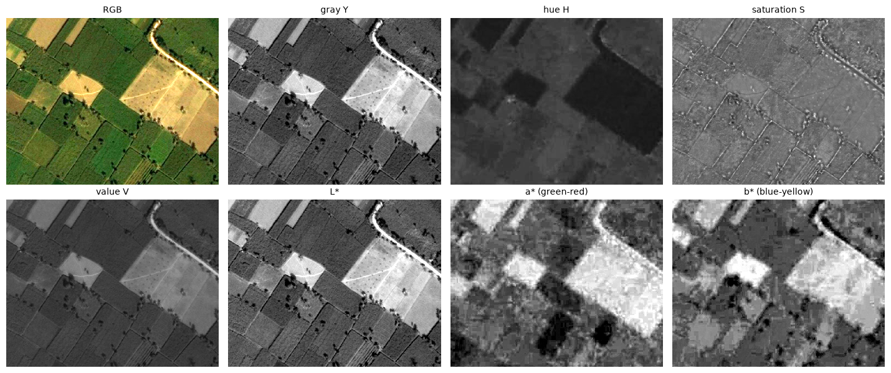
Hue separates the green fields from the brown soil and the track. The \(a^*\) band is negative on vegetation and positive on soil, a one-band proxy for greenness that needs no infrared.
Geometric transformations
A geometric transform maps output pixel coordinates \(\mathbf{p}'=(c',r')\) to input coordinates \(\mathbf{p}=T^{-1}\mathbf{p}'\) and samples the input there (inverse mapping, so there are no holes). Because \(\mathbf{p}\) is rarely an integer, a value is interpolated.
Interpolation
Let \(\mathbf p=(x,y)\), \(x_0=\lfloor x\rfloor\), \(y_0=\lfloor y\rfloor\), \(\delta_x=x-x_0\), \(\delta_y=y-y_0\).
Nearest (order=0): \(I'(\mathbf p)=I(\operatorname{round}x,\operatorname{round}y)\). Keeps original values, so use it for class maps.
Bicubic (order=3): a cubic convolution over a \(4\times4\) neighbourhood, sharper than bilinear.
When shrinking an image by a factor \(s>1\), high frequencies alias. resize applies a Gaussian pre-filter with \(\sigma=(s-1)/2\) (anti_aliasing=True, the default when the output is smaller).
Resize, rescale and block averaging
resize(img, shape=(h, w)) or scale=; give None for one side to keep the aspect ratio. rescale(img, f) scales both sides by \(f\). downscale_local_mean(img, (f_y, f_x)) averages non-overlapping blocks,
the exact model of a coarser sensor with the same spectral response. For a georeferenced input the new pixel size is \(a'=a\,W/W'\), \(e'=e\,H/H'\) and the extent is unchanged.
Rotation, shift and flip
A rotation by \(\theta\) (counter-clockwise) about the centre \((c_x,c_y)\) and a translation by \((t_x,t_y)\) are affine maps in homogeneous coordinates,
(rotate with resize_output=True enlarges the canvas to hold the whole rotated image: \(W'=W|\cos\theta|+H|\sin\theta|\).) Flips reverse an axis: \(I'(r,c)=I(r,W-1-c)\). Corners with no source pixel are filled with cval (NaN by default, so they show as no-data).
\(H\) is estimated from the four correspondences by solving the resulting linear system (direct linear transform). Functions: affine_transform, perspective_transform (the OpenCV warpAffine / getPerspectiveTransform + warpPerspective workflow). Crop is plain slicing, \(I'(r,c)=I(r_0+r,c_0+c)\) (crop(img, window=...) or bounds= in map units).
Code
small = ip.resize(photo, (305, 387)) # keeps dtype, georeferencing and extentfixed = ip.resize(photo, (300, None)) # height 300, width from aspect ratiohalf = ip.rescale(photo, 0.5, order=3) # half size with bicubic interpolationblocks = ip.downscale_local_mean(photo, (4, 4)) # average of each 4 x 4 block# output sizesprint("resize:", small.shape, "| keep aspect:", fixed.shape, "| rescale 0.5 bicubic:", half.shape, "| 4x4 block mean:", blocks.shape)# The aerial window is georeferenced: block-averaging coarsens the pixel but keeps the extentcoarse = ip.downscale_local_mean(aerial, (8, 8))# pixel size before and afterprint("aerial pixel size before/after (m):", aerial.rio.resolution()[0], "->", coarse.rio.resolution()[0])# the extent is unchangedprint("same extent:", np.allclose(aerial.rio.bounds(), coarse.rio.bounds(), atol=1e-4))
# Interpolation orders on a 6x zoom of a small patchpatch = ip.crop(photo, (250, 290, 480, 530))# three interpolation orders and the block-averaged aerial imageshow([ip.resize(patch, scale=6, order=o) for o in (0, 1, 3)] + [ip.stretch(coarse)], ["nearest (order 0)", "bilinear (order 1)", "bicubic (order 3)", "aerial, 8x8 block mean"], size=4.2)
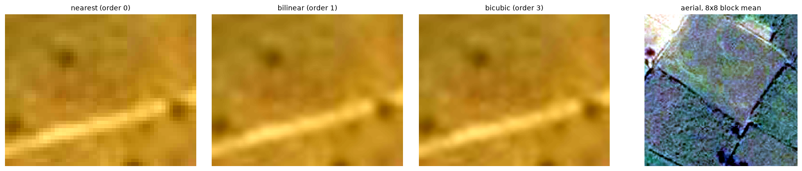
Code
rot = ip.rotate(photo, 30) # rotate by 30 degrees (corners cut off)rot_big = ip.rotate(photo, 30, resize_output=True) # rotate and enlarge the canvas to keep the cornerssh = ip.shift(photo, dx=60, dy=40, mode="edge") # shift 60 px right and 40 px down, repeating the edgefl = ip.flip(photo, "horizontal") # mirror left-rightcr = ip.crop(photo, (100, 400, 150, 650)) # rows 100-400, columns 150-650H, W = photo.shape[1:] # image height and widthM = np.array([[0.9, 0.25, 20], [0.0, 0.9, 10]]) # scale, shear, translateaff = ip.affine_transform(photo, M) # apply the affine matrixsrc = [(0, 0), (W -1, 0), (W -1, H -1), (0, H -1)] # the four image cornersdst = [(80, 40), (W -120, 0), (W -1, H -1), (0, H -60)] # where those corners should gopersp = ip.perspective_transform(photo, src, dst) # perspective warp from corners to cornersshow([rot, rot_big, sh, fl, cr, aff, persp], # all transforms side by side ["rotate 30°", "rotate 30°, resize_output", "shift (60, 40), edge", "flip horizontal", "crop", "affine (scale + shear)", "perspective"], ncols=4, size=3.8)# size of the enlarged canvas; x of the cropprint("rotated canvas:", rot_big.shape, "| cropped x starts at", float(cr.x[0]) if"x"in cr.coords elseNone)
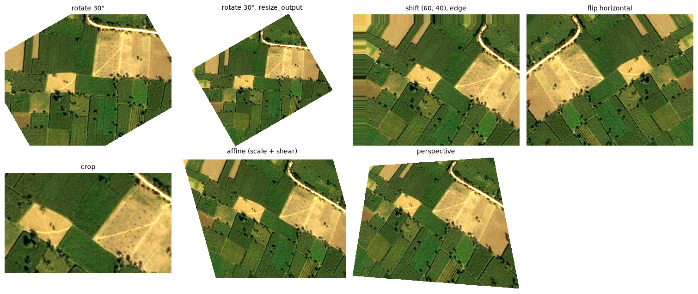
rotated canvas: (3, 915, 976) | cropped x starts at 150.5
Radiometric operations
Radiometric operations change pixel values without moving pixels. They use only the gray-level distribution, so they are the first step for display and for matching images from different dates or sensors.
Linear contrast stretch
With the \(p_{low}\) and \(p_{high}\) percentiles \(L\) and \(U\) of a band (default 2 and 98),
Clipping the tails prevents a few very bright or dark pixels (clouds, shadows) from compressing the rest of the histogram. Function: stretch(img, percentiles, out_range, per_band).
\(\gamma<1\) brightens dark areas (it expands dark values: \(dI'/dI=\gamma I^{\gamma-1}\) is large near 0), \(\gamma>1\) darkens. \(\alpha\) is the contrast gain and \(\beta\) the brightness offset. Functions: adjust_gamma, adjust_brightness_contrast.
Histogram and equalization
The histogram counts values in \(K\) bins, \(h(k)=\#\{I=k\}\); the normalized histogram \(p(k)=h(k)/N\) and the cumulative distribution \(F(k)=\sum_{j\le k}p(j)\). Histogram equalization maps each value through its own CDF,
\[I'=F(I),\]
which makes the output distribution approximately uniform and uses the full dynamic range. histogram returns counts and bin edges; equalize_hist applies the mapping per band.
CLAHE
Contrast-Limited Adaptive Histogram Equalization applies the mapping inside local tiles. The histogram of each tile is clipped at a limit \(\beta\) and the clipped excess is redistributed,
then the CDF of \(h_{clip}\) is used and values are bilinearly blended between neighbouring tiles to avoid seams. Clipping limits noise amplification in flat regions. Function: equalize_adapthist(kernel_size, clip_limit).
Histogram matching
To make image \(A\) look like reference \(R\), each value \(v\) is mapped to the value with the same cumulative probability,
\[I'=F_R^{-1}\big(F_A(I)\big).\]
This normalizes illumination and sensor offsets before change detection or when training on one scene and applying to another. Function: match_histograms(img, reference).
eq = ip.equalize_hist(gray) # global histogram equalisation# contrast-limited adaptive equalisation (CLAHE)clahe = ip.equalize_adapthist(gray, kernel_size=64, clip_limit=0.02)fig, axes = plt.subplots(2, 3, figsize=(13, 6.5)) # images above, histograms below# top row: the three imagesfor ax, (im, t) inzip(axes[0], [(gray, "gray"), (eq, "equalize_hist"), (clahe, "CLAHE")]): ax.imshow(to_show(im), cmap="gray", vmin=0, vmax=1); ax.set_title(t); ax.axis("off") # draw the image# bottom row: their histogramsfor ax, (im, t) inzip(axes[1], [(gray, "gray"), (eq, "equalize_hist"), (clahe, "CLAHE")]): h = ip.histogram(im, bins=64, value_range=(0, 1)) # 64-bin histogram on 0-1 ax.bar(h["edges"][:-1], h["counts"][0], width=1/64, color="steelblue") # the counts as bars cdf = np.cumsum(h["counts"][0]) / h["counts"][0].sum() # cumulative distribution ax2 = ax.twinx(); ax2.plot(h["edges"][1:], cdf, "r-"); ax2.set_ylim(0, 1) # the CDF on a second axis ax.set_title("histogram (blue) and CDF (red)", fontsize=9) # panel titleplt.tight_layout(); plt.show() # arrange and draw
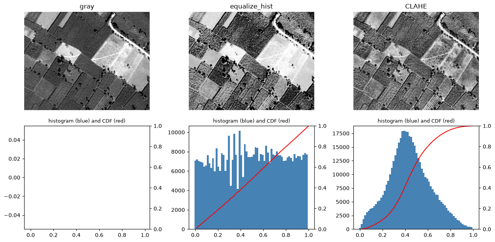
Equalization flattens the histogram and straightens its CDF; CLAHE gets a similar contrast gain without the global brightening of dark scenes. Histogram matching: bring the Planet near-infrared band to the statistics of the multispectral NIR band.
Code
planet_nir = planet.isel(band=[3]) # Planet NIR band (kept as a 1-band stack)multi_nir = multi.isel(band=[6]) # NIR band of the multispectral imagematched = ip.match_histograms(planet_nir, multi_nir) # Planet NIR mapped onto the multispectral histogramdef stats(x): # summary statistics of an image v = np.asarray(x.values ifhasattr(x, "values") else x, dtype=float) # values as floats# mean, spread and 5th / 95th percentilesreturn {"mean": np.nanmean(v), "std": np.nanstd(v), "p5": np.nanpercentile(v, 5), "p95": np.nanpercentile(v, 95)}# before and after matching, next to the referenceprint(pd.DataFrame({"Planet NIR": stats(planet_nir), "multispectral NIR (reference)": stats(multi_nir),"Planet NIR matched": stats(matched)}).round(1))# the two imagesshow([planet_nir, matched], ["Planet NIR (stretched for display)", "after match_histograms"], size=4.5)
Thresholding splits an image into foreground and background, \(B(r,c)=\mathbf 1[I(r,c)>T]\). The choice of \(T\) is the whole problem.
Otsu
Otsu chooses \(T\) to maximize the between-class variance of the two groups it creates. With normalized histogram \(p_i\), class weights \(\omega_0(T)=\sum_{i\le T}p_i\), \(\omega_1=1-\omega_0\) and class means \(\mu_0,\mu_1\),
Since total variance is fixed, this equals minimizing the within-class variance. It works best for a bimodal histogram.
Other global rules
Li: minimizes the cross entropy between the image and its thresholded version.
Triangle: draws a line from the histogram peak to the far end and picks the point of maximum distance from it; good for one dominant peak (water bodies, shadows).
Yen: maximizes an entropic correlation criterion.
Isodata: iterates \(T=\tfrac12(\mu_0(T)+\mu_1(T))\) to a fixed point.
Mean: \(T=\bar I\).
Local (adaptive) threshold
For uneven illumination, the threshold follows a local statistic over a \(w\times w\) block:
Function: threshold(img, method, block_size, offset, return_value) returns a uint8 0/1 mask (NaN pixels are 0).
Example: vegetation mask from NDVI
The normalized difference vegetation index \(\mathrm{NDVI}=\dfrac{\rho_{NIR}-\rho_{Red}}{\rho_{NIR}+\rho_{Red}}\in[-1,1]\) is high for photosynthesizing vegetation.
Code
red = planet.sel(band=3).astype("float64") # red band as floatnir = planet.sel(band=4).astype("float64") # NIR band as floatndvi = ((nir - red) / (nir + red)).expand_dims(band=[1]).astype("float32") # NDVI as a one-band stackprint("NDVI range:", float(ndvi.min()), float(ndvi.max())) # its rangemasks, vals = {}, {} # masks and threshold valuesfor m in ["otsu", "li", "triangle", "yen", "isodata", "mean"]: # six global thresholding methods masks[m], vals[m] = ip.threshold(ndvi, m, return_value=True) # mask and threshold of eachmasks["local"] = ip.threshold(ndvi, "local", block_size=51) # local (adaptive) threshold in 51 px blocksmasks["fixed 0.5"] = ip.threshold(ndvi, 0.5) # a fixed threshold for comparison# NDVI and every maskshow([ndvi] +list(masks.values()), ["NDVI"] + [f"{k}"+ (f" (T={vals[k][0]:.3f})"if k in vals else"") for k in masks], ncols=4, size=3.4)
# Otsu by hand: maximize the between-class variance over histogram binsv = ndvi.values.ravel()h = ip.histogram(ndvi, bins=256) # 256-bin NDVI histogramp = h["counts"][0] / h["counts"][0].sum() # share of pixels in each bincenters =0.5* (h["edges"][:-1] + h["edges"][1:]) # bin centresw0 = np.cumsum(p); w1 =1- w0 # weight of class 0 and class 1 for every thresholdmu = np.cumsum(p * centers); mu_t = mu[-1] # cumulative mean and the total meanwith np.errstate(divide="ignore", invalid="ignore"): # ignore division by zero at the ends sigma_b = (mu_t * w0 - mu) **2/ (w0 * w1) # between-class variance for every thresholdt_manual = centers[np.nanargmax(sigma_b)] # the threshold that maximises it# compare with the library resultprint(f"Otsu by hand T={t_manual:.3f} threshold(...,'otsu') T={vals['otsu'][0]:.3f}")fig, ax = plt.subplots(figsize=(7, 3.2)) # one panel# between-class variance curveax.plot(centers, sigma_b / np.nanmax(sigma_b), label=r"$\sigma_B^2(T)$(scaled)")ax.hist(v, bins=64, density=True, alpha=.3, color="grey") # NDVI histogram behind itax.axvline(t_manual, color="r", ls="--", label="Otsu T") # the chosen thresholdax.set_xlabel("NDVI"); ax.legend(); plt.show() # label and draw
Otsu by hand T=0.563 threshold(...,'otsu') T=0.563
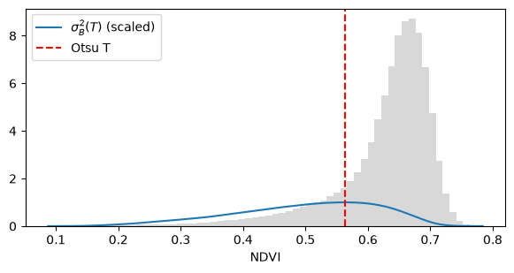
Filtering and denoising
Convolution (spatial filtering)
A linear filter replaces each pixel by a weighted sum of its neighbours. With a \((2k+1)\times(2k+1)\) kernel \(K\),
(This is correlation, which is what OpenCV filter2D computes; for symmetric kernels it equals convolution.) Borders are reflected. convolve(img, kernel) accepts an array or a name in ip.KERNELS: identity, box, sharpen, sharpen_strong, laplacian, emboss.
which is separable (\(G_\sigma(i,j)=g(i)g(j)\)) and so costs \(O(k)\) instead of \(O(k^2)\) per pixel. It suppresses noise by \(\approx 1/(2\sqrt\pi\,\sigma)\) in standard deviation for white noise, at the cost of blurring edges. Functions: mean_blur(size), gaussian_blur(sigma).
Median filter
\(I'(r,c)=\operatorname{median}\{I(r+i,c+j)\}\). A nonlinear filter that removes salt-and-pepper outliers and SAR speckle spikes while keeping edges, because a single extreme value cannot move the median. Function: median_blur(size).
Bilateral filter
A Gaussian weighted by both distance and value difference,
so pixels across an edge (large \(|I(\mathbf p)-I(\mathbf q)|\)) get small weights and edges survive. \(\sigma_s\) is sigma_spatial (pixels) and \(\sigma_c\) is sigma_color. Function: bilateral_denoise.
which penalizes total gradient, flattening noise inside regions but keeping jumps (a piecewise-constant prior). weight is \(\lambda\): larger is smoother. Function: tv_denoise.
Sharpening and unsharp masking
The Laplacian-based sharpen is \(I'=I-\nabla^2I\) (sharpen, with strength blending toward identity). Unsharp masking adds the difference between the image and a blurred copy,
\[I'=I+a\,\big(I-G_\sigma*I\big),\]
a high-pass boost with gain \(a\) (amount) and scale \(\sigma\) (radius). Function: unsharp_mask.
Noise models and PSNR
add_noise works on values in \([0,1]\): Gaussian \(I'=I+\mathcal N(0,\sigma^2)\), speckle \(I'=I+I\,\mathcal N(0,\sigma^2)\) (multiplicative, as in SAR), and salt / pepper / s&p (a fraction of pixels set to 1 and/or 0). A denoiser is scored against the clean image by
names = ["identity", "box", "sharpen", "laplacian", "emboss"] # standard 3 x 3 kernels# the photo filtered with eachshow([photo] + [ip.convolve(photo, k) for k in names], ["original"] + names, ncols=6, size=3.0)
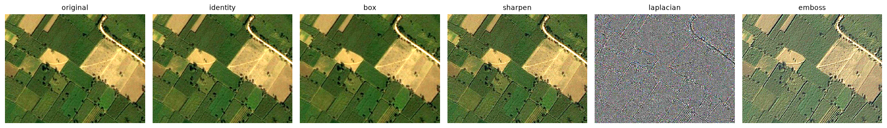
Code
def psnr(a, b): # peak signal-to-noise ratio of b against a# both as float arrays a = np.asarray(a.values ifhasattr(a, "values") else a, float); b = np.asarray(b.values ifhasattr(b, "values") else b, float)return10* np.log10(1.0/ np.mean((a - b) **2)) # PSNR in dB for values in 0-1clean = ip.stretch(gray, percentiles=(0, 100)) # gray in [0, 1]rows, imgs, titles = [], [], [] # scores, images and titlesfor noise, amount in [("gaussian", 0.10), ("s&p", 0.05), ("speckle", 0.25)]: # three noise types noisy = ip.add_noise(clean, noise, amount, seed=0) # add noise to the clean image out = { # five denoising filters"noisy": noisy,"mean 5": ip.mean_blur(noisy, 5),"gaussian s=1.5": ip.gaussian_blur(noisy, 1.5),"median 5": ip.median_blur(noisy, 5),"bilateral": ip.bilateral_denoise(noisy, sigma_color=0.3, sigma_spatial=2),"TV 0.15": ip.tv_denoise(noisy, weight=0.15), }# PSNR of each result rows.append({k: psnr(clean, v) for k, v in out.items()} | {"noise": f"{noise} ({amount})"}) imgs += [out["noisy"], out["median 5"], out["bilateral"], out["TV 0.15"]] # keep four images for display titles += [f"{noise}: noisy", "median 5", "bilateral", "TV 0.15"] # and their titlesprint("PSNR in dB (higher is better)") # table headerpd.DataFrame(rows).set_index("noise").round(2) # PSNR table
PSNR in dB (higher is better)
noisy
mean 5
gaussian s=1.5
median 5
bilateral
TV 0.15
noise
gaussian (0.1)
20.04
32.08
32.50
30.74
27.66
32.55
s&p (0.05)
18.36
30.33
30.71
37.48
25.36
27.35
speckle (0.25)
21.22
32.71
33.10
31.57
27.54
32.85
Code
# a zoomed crop of every kept imageshow([ip.crop(i, (150, 350, 150, 400)) for i in imgs], titles, ncols=4, size=3.3)
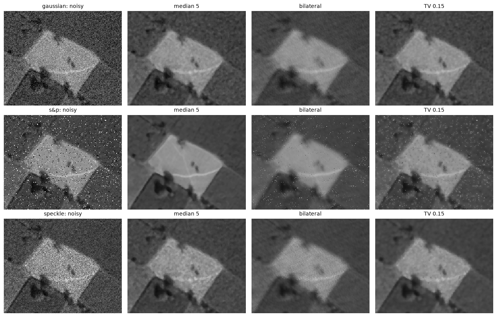
The median filter wins by a wide margin on salt-and-pepper noise (about +7 dB over the mean filter). For Gaussian and speckle noise the Gaussian blur and TV filters score highest, and the bilateral filter, tuned here to keep edges, removes less noise in a single pass (raise sigma_color to smooth more). No filter is ideal for multiplicative speckle; SAR needs speckle-specific filters such as Lee or Frost. Now sharpening:
\(G_y\) is the transpose. sobel_h and sobel_v return the signed responses (horizontal edges, vertical edges); edges(img, method) returns the magnitude.
Laplacian
The second derivative \(\nabla^2I=\partial^2I/\partial x^2+\partial^2I/\partial y^2\), with the kernel above; edges are its zero crossings, and edges(img, "laplacian") returns \(|\nabla^2 I|\). It responds to blobs and lines and is very noise sensitive, so smooth first.
Canny
Smooth with a Gaussian of scale sigma.
Compute \(|\nabla I|\) and \(\theta\).
Non-maximum suppression: keep a pixel only if its magnitude is a local maximum along \(\theta\), which thins edges to one pixel.
Hysteresis: pixels above high are edges; pixels between low and high are kept only if connected to a strong edge.
edges(img, "canny", sigma, low, high) returns a 0/1 uint8 map; larger sigma finds fewer, more important edges.
Code
ops = ["sobel", "roberts", "prewitt", "scharr", "laplacian"] # gradient operators# the edge magnitude of each, and the signed Sobel componentsshow([gray] + [ip.edges(gray, m) for m in ops] + [ip.sobel_h(gray), ip.sobel_v(gray)], ["gray"] + ops + ["sobel_h (signed)", "sobel_v (signed)"], ncols=4, size=3.6)
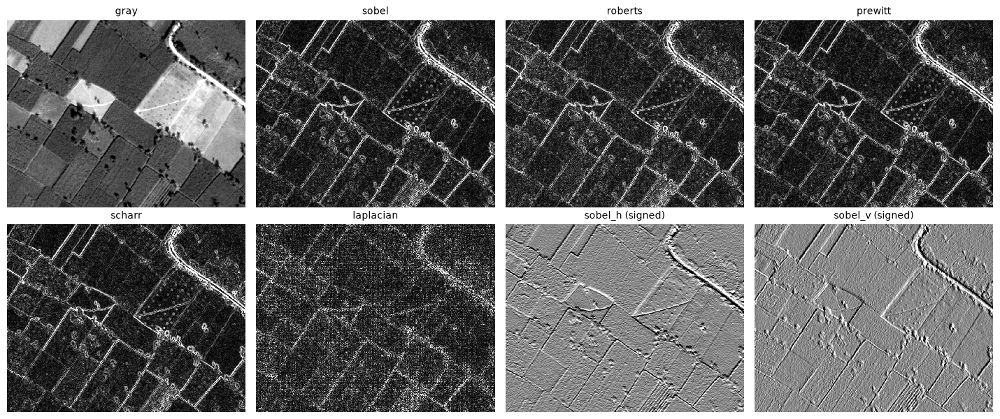
Code
cans = [ip.edges(gray, "canny", sigma=s) for s in (1, 2, 3)] # Canny edges at three smoothing scalescans.append(ip.edges(ip.add_noise(gray, "gaussian", 0.1, seed=0), "canny", sigma=2)) # Canny on a noisy image# compare themshow(cans, ["Canny sigma 1", "Canny sigma 2", "Canny sigma 3", "Canny sigma 2 on noisy image"], size=4.2)
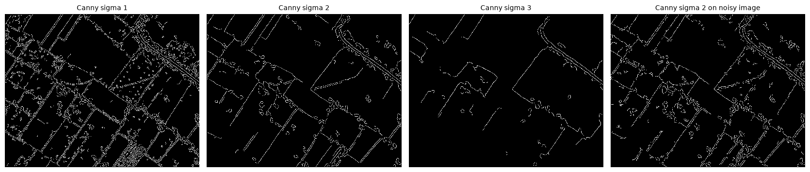
Field boundaries and the track show up at sigma 2-3, while sigma 1 also traces crop rows. This is the key trade-off for object-based classification: edges at the right scale delimit objects.
Morphology
Morphology probes an image with a small structuring element\(B\) (square, disk or cross). For gray images:
with eigenvalues \(\lambda_1,\lambda_2\). Both small means a flat region, one large means an edge, both large means a corner. Harris avoids the eigen-decomposition with
Peaks of \(R\) at least min_distance apart and above threshold_rel\(\cdot R_{max}\) are corners. Corners match images (registration), track field corners and locate man-made structures. Function: harris_corners returns an \((n,2)\) array of (row, col).
Histogram of Oriented Gradients (HOG)
The image is split into cells (e.g. \(8\times8\) pixels). In each cell the gradient orientations \(\theta\) vote into \(n\) bins weighted by \(|\nabla I|\). Cells are grouped into overlapping blocks (e.g. \(2\times2\) cells) and the block vector \(\mathbf v\) is normalized, \(\mathbf v\leftarrow\mathbf v/\sqrt{\|\mathbf v\|_2^2+\epsilon^2}\). The concatenation of all block vectors is a fixed-length shape descriptor that is insensitive to illumination; it was the standard input to a linear SVM for object detection (vehicles, buildings) before deep networks. Function: hog_features (a flat vector, or with visualize=True also the HOG image).
Code
# Harris corners on the lightly blurred imagepts = ip.harris_corners(ip.gaussian_blur(gray, 1.0), sigma=2, min_distance=10, threshold_rel=0.02)print("Harris corners:", len(pts)) # how many were found# histogram-of-oriented-gradients features and their picturehog_vec, hog_img = ip.hog_features(gray, orientations=9, pixels_per_cell=(16, 16), cells_per_block=(2, 2), visualize=True)print("HOG descriptor length:", hog_vec.shape[0], "= blocks x 2x2 cells x 9 bins") # descriptor lengthfig, axes = plt.subplots(1, 2, figsize=(12, 5)) # two panels# corners on the photoaxes[0].imshow(to_show(photo)); axes[0].plot(pts[:, 1], pts[:, 0], "r+", ms=8); axes[0].set_title("Harris corners"); axes[0].axis("off")# the HOG pictureaxes[1].imshow(hog_img, cmap="gray"); axes[1].set_title("HOG (gradient orientations per cell)"); axes[1].axis("off")plt.tight_layout(); plt.show() # arrange and draw
Harris corners: 24
HOG descriptor length: 62604 = blocks x 2x2 cells x 9 bins
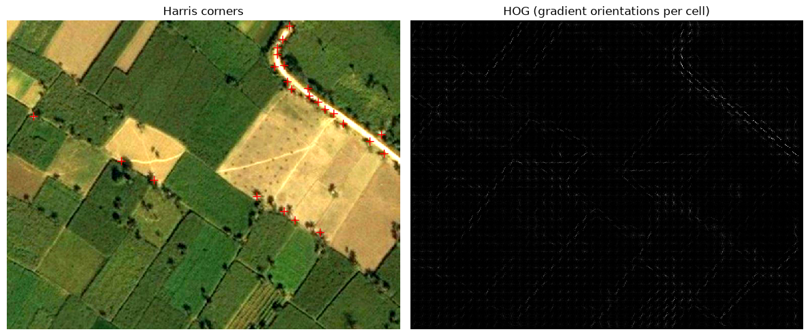
A multispectral workflow with no-data
The 8-band image has large NaN areas. NaN pixels are excluded from every statistic and filter, and stay NaN in the output, so the pipeline needs no manual masking. Bands: 1 coastal, 2 blue, 3 green, 4 yellow, 5 red, 6 red edge, 7 NIR1, 8 NIR2 (index 0-7 below).
False-color stretch (NIR, red, green).
NDVI and a red-edge index \(\mathrm{NDRE}=(\rho_{NIR}-\rho_{RE})/(\rho_{NIR}+\rho_{RE})\).
Median filter to reduce pixel noise while keeping field boundaries.
Otsu threshold and morphological clean-up.
Code
b =lambda i: multi.isel(band=i).astype("float64") # one band as float# NDVI from NIR (band 7) and red (band 5)ndvi8 = ((b(6) - b(4)) / (b(6) + b(4))).expand_dims(band=[1]).astype("float32")# red-edge NDVI from NIR and red edge (band 6)ndre8 = ((b(6) - b(5)) / (b(6) + b(5))).expand_dims(band=[1]).astype("float32")ndvi_med = ip.median_blur(ndvi8, 5) # median filter keeps the NaN gaps# the gaps are unchangedprint("NaN preserved by the filter:", bool(np.array_equal(np.isnan(ndvi8.values), np.isnan(ndvi_med.values))))veg8, T = ip.threshold(ndvi_med, "otsu", return_value=True) # Otsu threshold on the smoothed NDVIveg8 = ip.remove_small_objects(ip.morphology(veg8, "open", 3, "disk"), min_size=40) # open and drop small blobsvalid =~np.isnan(ndvi8.values[0]) # pixels with data# threshold and vegetation shareprint(f"valid pixels {valid.sum()}, Otsu T = {T[0] ifisinstance(T, list) else T:.3f}, vegetation fraction {veg8.values[0][valid].mean():.2%}")# false colour, indices and the maskshow([multi.isel(band=[6, 4, 2]), ndvi8, ndre8, ndvi_med, np.where(valid, veg8.values[0], np.nan)], ["false color (NIR, R, G)", "NDVI", "NDRE", "NDVI, median 5", "vegetation mask"], ncols=5, size=3.5)
NaN preserved by the filter: True
valid pixels 420000, Otsu T = 0.182, vegetation fraction 90.45%
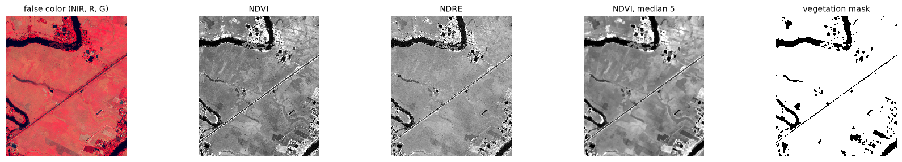
From processed layers to a classifier
Every output above is a new band. Stack several, flatten with to_vector, and the matrix is ready for any classifier in geolattice.rsense.classify. Here k-means (unsupervised) clusters the photo from: Lab color, Gaussian-smoothed Lab (context), Sobel edges and a local-variance texture proxy,
computed with two box filters. Features are standardized, \(z=(x-\bar x)/s\), so no layer dominates the Euclidean distance.
Code
from sklearn.cluster import KMeans # k-means clusteringL = lab.isel(band=0) # lightness bandsmooth_lab = ip.gaussian_blur(lab, 3.0) # smoothed L*a*b*edge = ip.edges(gray, "sobel") # Sobel edge magnitudemean1 = ip.mean_blur(gray, 9) # local meanmean2 = ip.mean_blur(gray * gray, 9) # local mean of the squareslocal_var = (mean2 - mean1 **2).clip(min=0) # local variance (texture)def stack(*layers): # stack layers into one (feature, y, x) array# every layer flattened to (n, y, x) and concatenatedreturn np.concatenate([np.asarray(l.values ifhasattr(l, "values") else l).reshape(-1, *l.shape[-2:]) for l in layers])rgb_feat = stack(photo.astype("float32")) # RGB onlyrich_feat = stack(lab, smooth_lab, edge, local_var) # colour, smoothed colour, edges and textureresults = {} # cluster maps# the two feature setsfor name, feat in [("RGB only", rgb_feat), ("Lab + smooth + edge + texture", rich_feat)]: X = ip.to_vector(feat) # pixels as rows X = (X - X.mean(0)) / X.std(0) # standardise each feature km = KMeans(n_clusters=5, n_init=4, random_state=0).fit(X) # five clusters results[name] = km.labels_.reshape(feat.shape[1:]) # cluster labels as an imagefig, axes = plt.subplots(1, 3, figsize=(15, 4.2)) # three panelsaxes[0].imshow(to_show(photo)); axes[0].set_title("photo") # the photofor ax, (k, v) inzip(axes[1:], results.items()): # one cluster map per feature set# draw it ax.imshow(v, cmap="tab10", vmin=0, vmax=9, interpolation="nearest"); ax.set_title(f"k-means (5): {k}")for ax in axes: ax.axis("off") # no axesplt.tight_layout(); plt.show() # arrange and draw# size of the rich feature matrixprint("feature matrix shape for the rich stack:", ip.to_vector(rich_feat).shape)
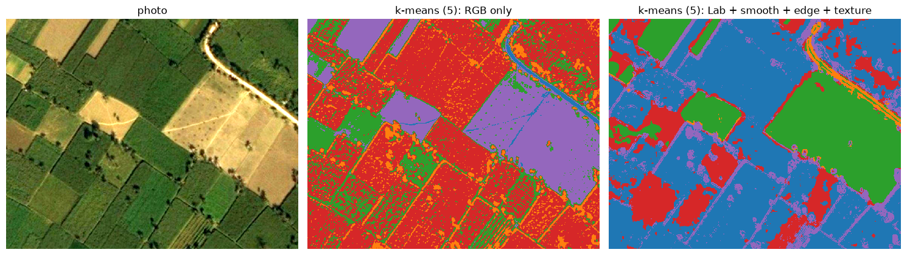
feature matrix shape for the rich stack: (472750, 8)
The color-only map is speckled because neighbouring pixels of one field differ in color. Adding smoothed and texture layers makes clusters spatially coherent, which is the idea behind object-based classification (notebook 09_09_02_01) without any segmentation step.